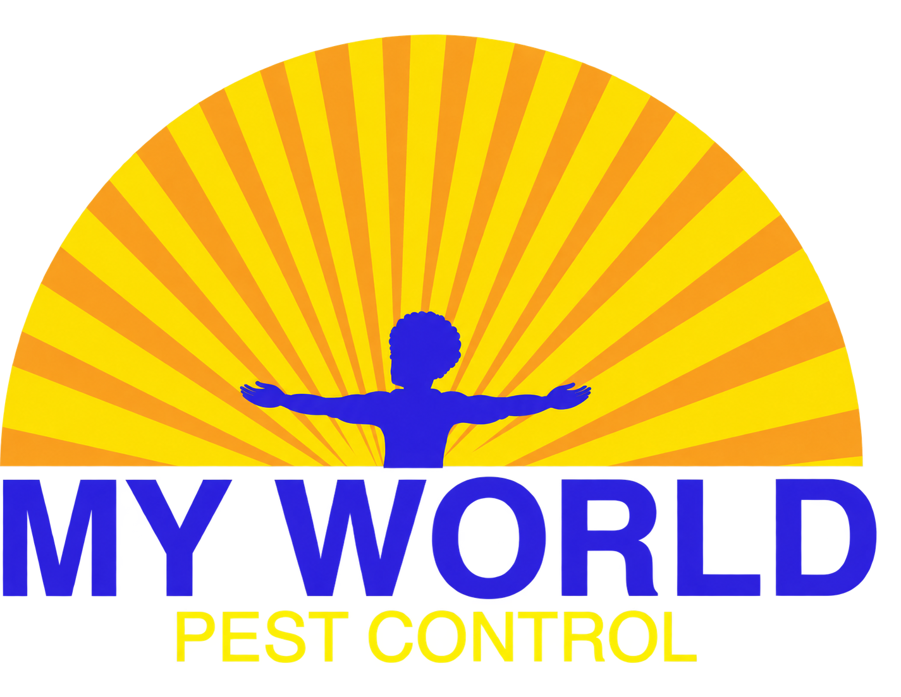

MISSION 01 · THE FIRST CALLWalk to the front door of the house
PESTS 0/5
VIEW THIRD PERSON
MY WORLD PEST CONTROL · INDIANA
·
Left joystick: move · Drag right side: look around
3D library could not load. Open the deployed site in Safari with an internet connection.

IN MY WORLD
PEST CONTROL NIGHTMARE
Mission 01 — The First Call
Arrive at an Indiana home, inspect the kitchen, and treat the infestation. Something is waiting downstairs...
Move with the left joystick. Drag the right side to turn. INSPECT activates a close-up view; SPRAY treats pests.